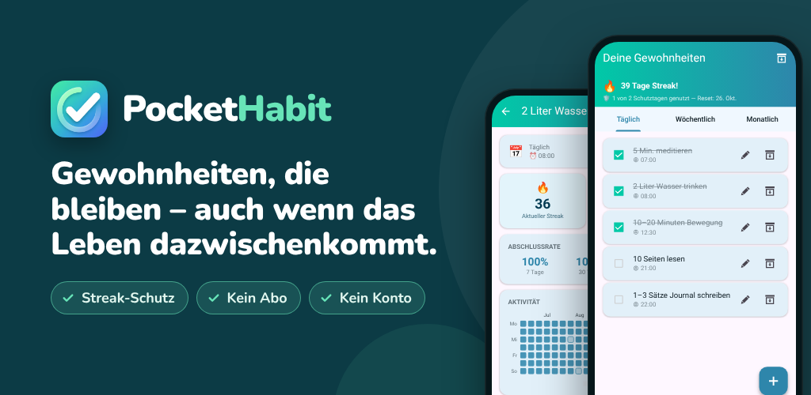

PocketHabit: Habit Tracker
Baue Gewohnheiten auf, die bleiben – Habit-Tracker mit Streak-Schutz, ohne Abo.
Google PlayDu willst bessere Gewohnheiten aufbauen – aber das Leben kommt immer wieder dazwischen? PocketHabit ist der Habit-Tracker, der dir Raum lässt, Mensch zu sein.
FÜR EINSTEIGER GEMACHT
Keine komplizierte Einrichtung. Kein Konto. Kein Abo. Einfach die App öffnen, die erste Gewohnheit anlegen und loslegen. Eine kurze Einführung macht dich in unter einer Minute startklar.
SO FUNKTIONIERT'S
- Lege deine ersten Gewohnheiten an – oder wähle bei der Einführung aus fertigen Vorschlägen
- Hake sie mit einem Tipp ab
- Sieh zu, wie dein Streak wächst – der Streak-Schutz fängt die Tage ab, die nicht nach Plan laufen
NIEMAND IST PERFEKT
Der einzigartige Streak-Schutz von PocketHabit weiß, dass echte Veränderung Zeit braucht. Wenn du einen Tag verpasst, reißt dein Streak nicht sofort – du hast einen Puffer, der dir hilft, wieder in die Spur zu kommen. Du entscheidest, wie streng es sein soll:
- Einsteiger: 2 Fehltage pro Woche erlaubt
- Einfach: 1 Fehltag pro Woche
- Normal: 1 Fehltag pro 14 Tage
- Schwer: 1 Fehltag pro Monat
Wachse in deinem eigenen Tempo – und wenn du bereit bist, erhöhe den Schwierigkeitsgrad.
ALLE GEWOHNHEITEN, EINE APP
Ob tägliche Routinen, wöchentliche Aufgaben oder monatliche Ziele – PocketHabit kann alles:
- Täglich: Morgenroutine, Sport, Wasser trinken
- Wöchentlich: Bestimmte Wochentage auswählen
- Monatlich: Ein festes Datum oder z. B. „jeden 2. Montag im Monat“
ERINNERUNGEN, DIE ZU DIR PASSEN
Statt für jede Gewohnheit eine eigene Erinnerung einzurichten, aktivierst du eine globale tägliche Erinnerung. App öffnen, alles auf einmal abhaken. So einfach kann eine Routine sein. Lieber feste Zeiten pro Gewohnheit? Jede Gewohnheit kann auch ihre eigene Erinnerung bekommen.
DEINE APP, DEIN LOOK
Wähle aus mehreren Farbdesigns und wechsle zwischen Dark und Light Mode. Eine App, die du jeden Tag gern öffnest, hilft dir, dranzubleiben.
STATISTIKEN, DIE MOTIVIEREN
Sieh auf einen Blick, wie deine Woche und dein Monat gelaufen sind. Die Detailansicht zeigt eine Heatmap deiner Erledigungen, deine Abschlussrate und deinen persönlichen besten Streak.
- Monatskalender: Jeder Tag ist danach eingefärbt, wie viel du geschafft hast
- Wochentagsübersicht: Sieh, an welchen Tagen es am besten läuft
- Abschlussraten der letzten 7, 30 und 90 Tage
MEILENSTEINE, DIE MOTIVIEREN
30 Erfolge belohnen deinen Fortschritt: deinen ersten 7-Tage-Streak, perfekte Wochen und Monate und sogar dein Comeback nach einer Pause.
DEINE TÄGLICHE PORTION MOTIVATION
Jeder Tag beginnt mit einem frischen Blatt von deinem Abreißkalender – einem von 240 kurzen Sprüchen, die dir helfen, dranzubleiben.
DEINE DATEN, DEINE KONTROLLE
- Exportiere deine Gewohnheiten als Backup-Datei und stelle sie auf einem neuen Handy wieder her
- Pausiere Gewohnheiten im Archiv – ihre Statistiken bleiben erhalten
FÜR WEN IST DIESER HABIT-TRACKER?
Für alle, die klein anfangen und dranbleiben wollen – ob mehr Wasser trinken, jeden Abend lesen, dreimal pro Woche Sport oder eine aufgeräumte Wohnung. Besonders, wenn dich strenge Habit-Apps schon einmal nach einem einzigen verpassten Tag aufgeben ließen.
PREMIUM: EINMAL ZAHLEN, FÜR IMMER PROFITIEREN
Kein Abo. Keine monatlichen Gebühren. Einmal upgraden und für immer genießen:
- Komplett werbefrei
- Zugriff auf alle Designs
- Statistikverlauf über 2 Jahre (statt 6 Monate)
- Streak-Schutz ohne Werbevideos
- Alle künftigen Premium-Features inklusive
MIT NUTZERN, FÜR NUTZER
PocketHabit wächst mit dir. Neue Funktionen werden nur entwickelt, wenn echte Nutzer sie sich wirklich wünschen. Dein Feedback zählt – melde dich und hilf mit, die App besser zu machen.
Datenschutz: Alle deine Gewohnheitsdaten bleiben auf deinem Gerät. Kein Konto nötig.
Jetzt herunterladen und den ersten Schritt zur besten Version deiner selbst machen.